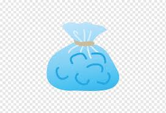
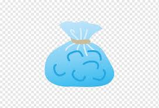

Back Injury
Diffrent types
Injuries can affect any part of your back, but injuries most often happen in your lower back. Common injuries include:
- sprains and strains — when you overstretch a muscle or tear a ligament in your back
- herniated disc — when a spinal disc bulges out of shape and irritates a nerve
- fractured vertebrae — a break in any of the bones in your back
- spinal stenosis — the narrowing of the space where your spinal cord sits or of the small spaces where your nerves leave your spine
- spondylolisthesis — one of your vertebrae slips forward, leaning on the vertebra below, squashing the nerve between the 2 vertebrae
How To treat it
 

- Cold therapy reduces inflammation, edema, pain, and muscle spasms associated with acute back injury.
- Heat therapy is used to reduce pain and alleviate sore and stiff muscles.Heat therapy is proposed to work by facilitating delivery of nutrients and oxygen to the site of injury to accommodate healing.
How long the recovery period is

Low back pain or lumbago is a common disorder involving the muscles, nerves, and bones of the back, in between the lower edge of the ribs and the lower fold of the buttocks. Pain can vary from a dull constant ache to a sudden sharp feeling. Low back pain may be classified by duration as acute (pain lasting less than 6 weeks), sub-chronic (6 to 12 weeks), or chronic (more than 12 weeks). The condition may be further classified by the underlying cause as either mechanical, non-mechanical, or referred pain. The symptoms of low back pain usually improve within a few weeks from the time they start, with 40–90% of people recovered by six weeks. learn more